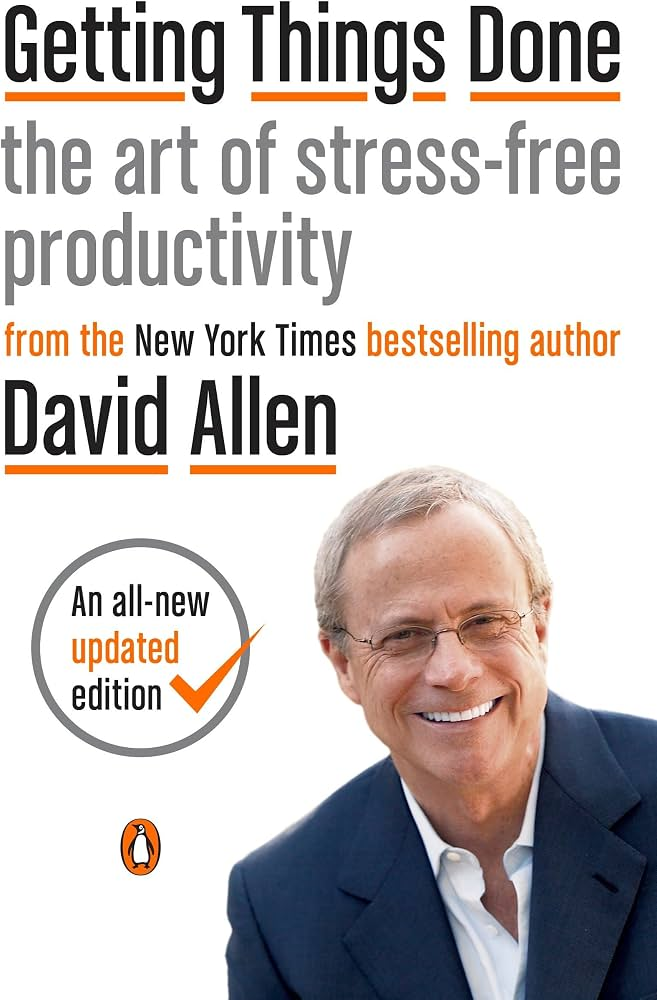

Getting Things Done opens with a diagnosis most busy people recognise: the problem isn't how much work you have, it's the unfinished business living in your head. Allen calls these open loops, and argues that each one keeps nibbling at your attention whether or not you're working on it.
His answer isn't a better to-do list but a method. A five-stage workflow (Capture, Clarify, Organize, Reflect, Engage) moves everything out of your head and into a small set of trusted places, reviewed on a regular cycle. A second model, the Horizons of Focus, connects that day-to-day machinery to your projects, responsibilities, goals and purpose.
The book is deliberately practical: far more about mechanics (how to empty an inbox, define a next action, run a Weekly Review) than about motivation. The updated edition keeps the method intact and refreshes it for a world of smartphones and constant connectivity.
Get it out of your head and into a trusted inbox.
Decide what it is and what, if anything, happens next.
Put the result in the right bucket.
Review so the system stays current and trusted.
Choose what to do now, with confidence.
Listings show a foreword by James Fallows, acknowledgments, and a short welcome-style opening before Part One. I could not confirm whether the updated edition's opening is titled a preface or a welcome, so treat the label as approximate.
The thrust, as I read it, is that the original 2001 method needed little revision: it was never tied to a particular tool, and the flood of email and notifications since then has made its core problem (too many open loops, too few trusted places to put them) more pressing, not less.
Allen argues that working lives have outgrown the systems most people use to manage them. Jobs are less clearly bounded, information arrives from many channels, and "done" is rarely obvious in knowledge work. The result is a chronic, low-grade anxiety people have learned to treat as normal.
He introduces the book's promise: you can work with a clear head and relaxed control however much is on your plate, provided you adopt a handful of specific habits. The chapter previews mind like water and makes the provocative claim that stress tracks unclarified commitments more than workload.
The book's central architecture. Whatever competes for your attention, the same five stages apply: Capture it, Clarify what it means, Organize the result, Reflect on the system regularly, and Engage by choosing what to do. (Listings title the chapter "Five Stages"; some reviews say "steps". Same model.)
Allen's point is that most people already do all five informally and inconsistently. The power comes from doing each one deliberately and completely, so Capture and Clarify don't blur into a half-processed pile nobody trusts. The deep-dive tab takes this model apart stage by stage.
Allen introduces the Natural Planning Model, which he says the mind already uses informally, even to plan a dinner: Purpose (why), Outcome Visioning (what "done" looks like), Brainstorming (collect ideas without judging), Organizing (sort into components, sequences, priorities) and Next Actions (decide the next physical step).
He contrasts it with the "unnatural" planning most people were trained in, which jumps to structure and task lists without clarifying purpose or vision and so produces plans without energy or buy-in.
Before the workflow itself, Allen asks for a real logistical setup: a workspace, in-trays, basic supplies, a filing system and decisions about which digital tools hold what. Improvising "in your head" or with a half-built setup undermines the method, because its calm depends on every item having one clear, known home.
He recommends blocking substantial uninterrupted time for the first full pass, since that initial Capture-and-Clarify push is the highest-leverage investment and everything afterwards is maintenance.
"Stuff" is Allen's loose term for anything with your attention that hasn't yet been clarified or organized. The discipline is to get it out of your head into a small number of trusted collection tools the moment it appears.
He recommends a mind sweep: sit down and list every current commitment, however small, because most people underestimate what is quietly occupying them. A single untracked item can keep the mind rehearsing it and undermine trust in the rest.
Processing captured items one at a time, top item first, with one gating question: is it actionable? If not, trash it, file it as reference, or park it on Someday/Maybe. If it is, decide the desired outcome and the very next physical action, then apply the Two-Minute Rule.
For longer actions there are three choices: do it yourself later (track it), delegate it (track it on a Waiting For list), or defer it to a specific time (calendar). The goal of getting "in" to empty isn't finishing everything; it's making one clear, recorded decision about each item.
The list structure the method runs on: a Projects list (anything needing more than one action), Next Actions lists by context (@calls, @computer, @errands), a Calendar for things tied to a day or time, a Waiting For list, a Someday/Maybe list, plus reference material filed separately.
Allen is firm about keeping the calendar "sacred": only time- or day-specific items, never aspirational to-dos, because a cluttered calendar stops being trusted. Context lists let you scan only what is actually possible in your current situation.
Introduces the Weekly Review: a dedicated block to get "in" to empty, review every active list, update the Projects list and re-check the calendar and Waiting For items. Reflection also happens at other rhythms: a glance at the calendar and lists throughout the day, and less frequent looks at the higher horizons.
Allen is candid that this is the step people skip, and that skipping it is why once-successful implementations decay: lists stop matching reality and people drift back to holding things in their heads.
The moment-to-moment question: what should I do right now? Allen offers a layered filter: context (what is possible where you are), time available, energy available, then priority.
He pairs it with a model of the three kinds of work: doing predefined work (executing from your lists), doing work as it shows up (handling the unplanned), and defining your work (processing and planning). Confident choices only come when the earlier stages are trustworthy; otherwise "priority" is a guess made on incomplete information.
Applies the Natural Planning Model to live projects and pushes back against over-planning. Most projects need only a light pass: enough purpose and outcome clarity to know what "done" is, and enough thinking to find the next action.
When a project stalls, the likely cause is an unclear outcome or an undefined next action rather than laziness. Project support material (plans, notes, checklists) is reference, kept separate; the Projects list stays a short index.
Zooms out from mechanics to argue that the capture habit alone, reliably getting things out of your head, produces a noticeable shift in clarity even before the other stages are mastered. It is the entry point almost anyone can adopt immediately.
Allen links it to creativity and presence: a mind not burning background cycles on remembering has more room for thinking and for other people.
Returns to what Allen treats as an underrated idea: define a physical, visible next action for every open commitment. Many stalled tasks aren't motivation problems; they're vagueness problems. (My example: "plan the offsite" is a project label; "email the venue to check dates" is an action.)
Connects the method to the Horizons of Focus: current actions, projects, areas of focus and responsibility, goals, vision, and purpose and principles. Day-to-day task management feels hollow unless it is periodically connected upward to what it serves.
This is a periodic review discipline, done less often the higher the altitude, not a demand to contemplate life purpose while clearing email.
A Mind Tools review says the updated edition's Part Three was expanded with new material on the cognitive-science case for the method and on mastery. One note-taking site lists a Chapter 14 on neuroscience, and I could not find a reliable source for the exact titles, numbering or order, so I have grouped them here rather than guess.
From the reviews' framing, the science material argues that research on attention and self-regulation supports the method, and the mastery material treats it as a skill with stages of competence rather than a one-off setup. I have not read these chapters closely enough to summarise further.
Listings show a short conclusion before the index. In keeping with the book's tone, I expect it to frame the method as an ongoing practice rather than a project with an end date, with partial but consistent adoption beating a perfect system abandoned after a week. That is my inference from the book's overall approach, not a verified summary.
This is the engine of the book. Every item that grabs your attention travels the same five-stage path. Each stage below gets the same treatment: what it is, what it looks like, why people slip, how it feels when it breaks, what it costs, what it sounds like, and the way out. The example dialogue and scenarios are my own illustrations in the spirit of the book, not quotations from it.
Capture means collecting anything that is pulling at your attention (a request, an idea, a worry, a half-read article) into a small number of trusted inboxes. At this point you are not deciding anything. You are only getting it out of your head so your mind can stop guarding it.
Capture feels trivial, so people trust memory. Another trap is too many inboxes (five notebooks, three apps) so that "captured" things are still lost. The cost is quiet: a background hum of things you might be forgetting, and the odd dropped commitment that damages trust with other people.
Clarifying is the thinking step. You take each captured item, top first, and ask whether it is actionable. If not, it is trashed, filed as reference, or parked for someday. If it is, you decide the outcome you want and the very next physical action. This is where vague "stuff" becomes specific commitments.
The "four D" shorthand is how many summaries compress the book's decision flow; the book itself frames it as the do / delegate / defer choices plus the non-actionable bins.
People confuse clarifying with doing, so they react to whichever item is loudest, or they re-read and re-sort the same items without deciding. The result is an inbox that never empties and lists full of unclear entries ("budget", "Sam", "website") that nobody wants to touch. The cost is decision fatigue repeated every time you look.
Organizing takes the output of Clarify and files it into a small set of buckets whose rules you never bend. The point is trust: you always know where a given kind of item lives, so you don't have to hold it in mind.
The classic slip is mixing buckets: aspirational tasks on the calendar, projects hiding as next actions, or one giant list sorted by guilt. A calendar full of "maybe" items stops being believed, and the system falls back to memory. The cost is a list you scan and then ignore.
Reflecting is how the system stays trustworthy. Short looks happen daily (calendar, next actions); the deeper one is the Weekly Review, which resets everything. Without it, even well-built lists drift away from reality.
Get Creative is the third move: glance at Someday/Maybe and the higher horizons for ideas worth promoting. (The Clear / Current / Creative grouping is how the method is commonly summarised; check your copy for the exact checklist.)
Reviews get skipped when life is busy, which is exactly when they matter most. Skipping causes quiet decay: stale next actions, projects with no next step, and the first "I'll just keep this in my head" exception that grows. The cost is lost trust, and a system that is abandoned within weeks.
Engaging is the payoff stage: actually doing the work. Allen supplies two tools to make the choice easier, the four-criteria filter and the three kinds of work. The idea is that choice feels easy only if the previous four stages are sound.
People engage on urgency or noise: the loudest message, the newest email. Often that is because they don't trust the lists enough to ignore the inbox. The cost is a day of motion with nagging doubt about what you didn't do.
| Capture | Clarify | Organize | Reflect | Engage | |
|---|---|---|---|---|---|
| Core question | What has my attention? | What is it, and what's the next action? | Where does it belong? | Is the system still true? | What should I do now? |
| Input | Thoughts, requests, paper, messages | Everything in your inboxes | Decided items | All lists and calendar | Trusted lists |
| Output | Items in a few inboxes | Outcomes and next actions | Items on the right lists | Current, complete lists | Work done with confidence |
| Main tools | Inboxes, mind sweep | Actionable test, two-minute rule | Context lists, calendar, Waiting For | Weekly Review | Four criteria, three kinds of work |
| Rhythm | Continuous | Regular, to empty | As you clarify | Daily glance, weekly review | All day |
| Feels like | "It's out of my head" | "I decided once" | "I know where it lives" | "I trust my lists" | "I'm choosing, not reacting" |
| Slip sign | Things pop up at 3 a.m. | Inbox never empties | Giant, mixed lists | Stale lists, dropped balls | Reactive, noisy days |
| Main cost | Background anxiety | Repeated decisions | Untrusted lists | System decay | Doubt about what you skipped |
| The antidote | Fewer, trusted inboxes | Process to empty, top-down | Strict bucket rules | Protect the weekly slot | Check upstream stages |
Two points worth holding onto. First, the stages depend on each other: a weakness upstream shows up as a symptom downstream, so noisy Engage days often start in Capture or Reflect. Second, Reflect is the stage most often skipped, and its absence quietly undoes the other four.
Slide each stage from 0 (rarely) to 100 (almost always). This is a reflective self-check I built, not a test from the book.
Six quick calls, all my own scenarios. Tap your answer.
The lower horizons (actions, projects) are what Capture, Clarify and Organize handle daily. The higher ones are what Reflect should occasionally touch, so that Engage choices aren't just efficient but meaningful. Allen's suggestion, as I read it, is to look at higher horizons at lower frequency: a flicker of purpose at the top, but regular passes at projects and responsibilities.
The practical machinery of the book in one place. Frameworks are described from the book's structure; the checklist and practice plan at the bottom are my own suggestions.
Full breakdown on the Five Stages tab.
Mind Like Water.
Open Loops.
Capture. Clarify. Organize. Reflect. Engage.
The Next Action.
The Two-Minute Rule.
Horizons of Focus.
The Weekly Review.
Paraphrases, not direct quotes.
Use your head for thinking, not for storing.
Vague commitments cause more stress than big ones.
If you can't name the next action, the outcome isn't clear yet.
A trusted system is one you review.
Daily efficiency means little if it isn't aimed at something that matters.
| Category | Claude | Dan | Why Claude scored it that way |
|---|---|---|---|
| Ideas | 4.3 | 4.0 | Next actions, open loops and the weekly review are influential and well fitted together, though they build on older ideas about externalising memory. |
| Readability | 3.0 | 4.5 | Logically structured, but repetitive and jargon-heavy, with long stretches of filing detail. |
| Actionability | 4.7 | 4.0 | Concrete steps, a clear workflow and quick wins such as the two-minute rule; readers consistently call it practical. |
| Evidence | 3.0 | 3.0 | Built on the author's consulting experience and anecdote. Later cognitive-science work is supportive, but the book itself is not research-led. |
| Category average | 3.75 | 3.88 | Claude's overall of 4.0 sits slightly above its category average because practical value weighed most. Dan's overall of 4.5 sits 0.62 above his own category average of 3.88. The biggest gap between Dan and Claude is Readability (4.5 vs 3.0). |
Categories are the same four used for every review: Ideas, Readability, Actionability, Evidence.
Goodreads combines every edition of the book (the page checked is the 2001 paperback, 267 pages, the main edition). Star split: 5★ 39% (67,510), 4★ 33% (56,521), 3★ 18% (32,074), 2★ 5% (9,658), 1★ 3% (5,261).
What you may have missed: some readers find the review and goal-setting guidance vague next to the detailed capture and clarify steps, and some find the spiritual, Eastern-flavoured framing off-putting. Robert Andrews in Wired (2005) called GTD "a new cult for the info age", a reminder that enthusiasm can outrun evidence. On the other side, Heylighen and Vidal (Long Range Planning, 2008) found cognitive science supports and extends GTD's recommendations. Cal Newport's 2020 New Yorker piece "The Rise and Fall of Getting Things Done" is also worth a look (title only; not read).
Dan rates Getting Things Done 4.5 out of 5. He says he loves the book: it changed how he got things done across his whole life, and he still builds his to-do lists on its method today. His first instinct was a 5.
He marked it down because, as he has got older and used the method more, he finds it cumbersome. It can take a lot of time to set up, and sometimes he spends more time building out a to-do system than getting things done.
He thinks that, moving into the modern era, the book has become a little less relevant. The core ideas of how the method works are still very relevant however you build your tickler file, and he says you can take different aspects out of it. He gave Evidence the lowest score, a 3.
Written up from Dan's own words (11 Nov 2026). His view stands apart from the Claude and reader views above.
Stress comes from incomplete commitments, not workload. A hundred open loops tracked in a system you trust weigh less than ten held in your head. The Weekly Review is what keeps that trust alive.
Getting Things Done earns its status as the foundational text of modern personal productivity by describing a complete system rather than a pile of tips. Capture, Clarify, Organize, Reflect and Engage each have an explicit job, and the book insists they work together.
Read it once for the architecture, then start small: ubiquitous capture and a genuine weekly review before you worry about the perfect list structure. Use the Five Stages tab's health check to find your weak link, and repair that first.